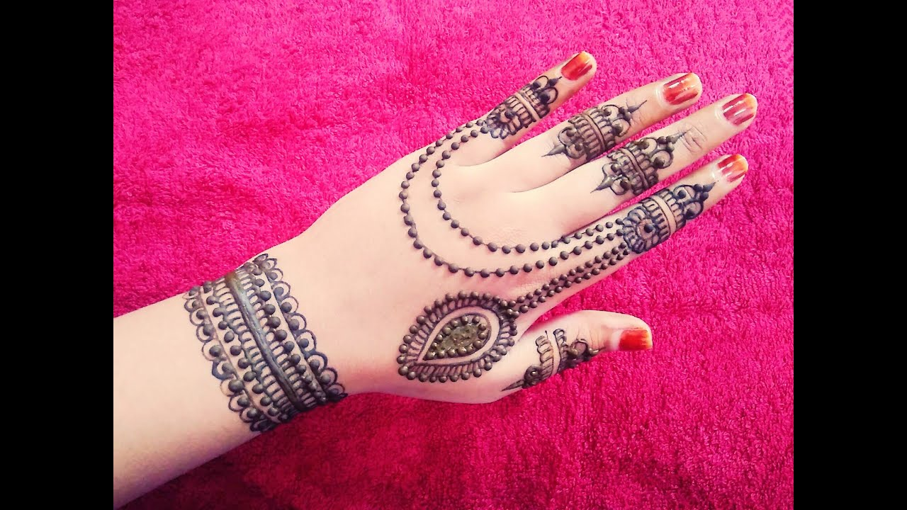
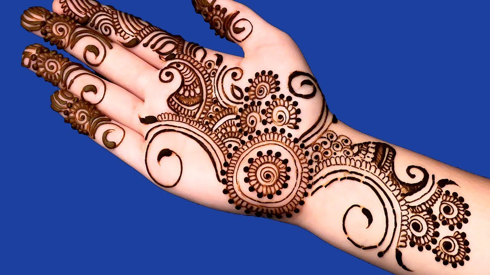

Mehndi Design
Mehndi, mehendi or henna is a form of body art from India, Pakistan, Arabia and the Arab world in which decorative designs are created on a person's body, using a paste, created from the powdered dry leaves of the henna plant (Lawsonia inermis). Ancient in origin, mehndi is still a popular form of body art among the women of the Indian Subcontinent, Africa and the Middle East.
Mehndi is derived from the Sanskrit word mendhika. The use of mehndi and turmeric is described in the earliest Hindu Vedic ritual books. It was originally used for only women's palms and sometimes for men, but as time progressed, it was more common for men to wear it. Haldi (staining oneself with turmeric paste) as well as mehndi are Vedic customs, intended to be a symbolic representation of the outer and the inner sun. Vedic customs are centered on the idea of "awakening the inner light". Traditional Indian designs are representations of the sun on the palm, which, in this context, is intended to represent the hands and feet. Mehendi has a great significance in performing classical dance like bharatnatyam.